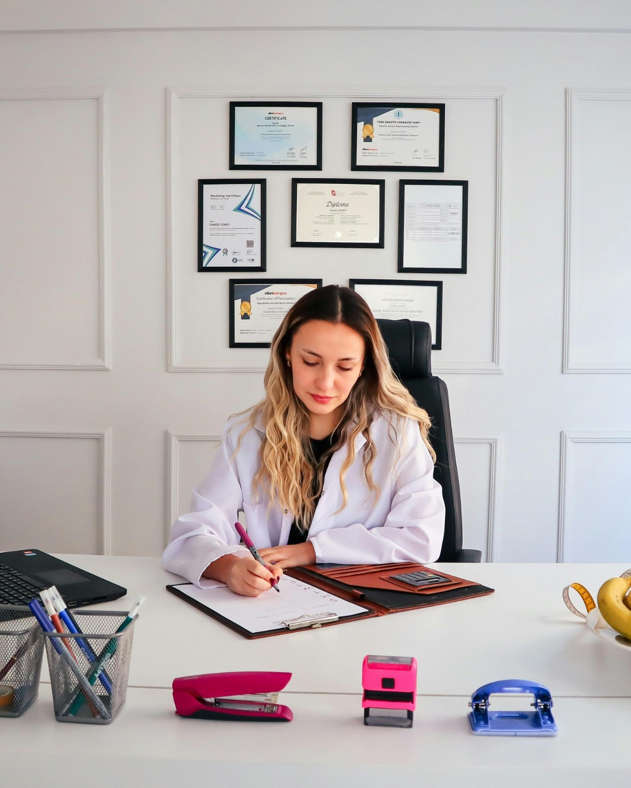
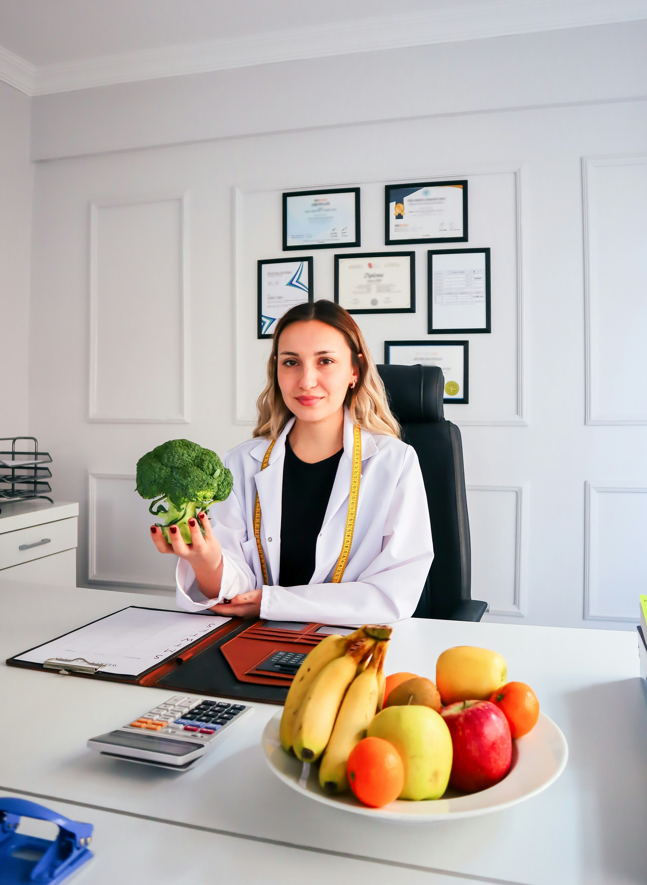
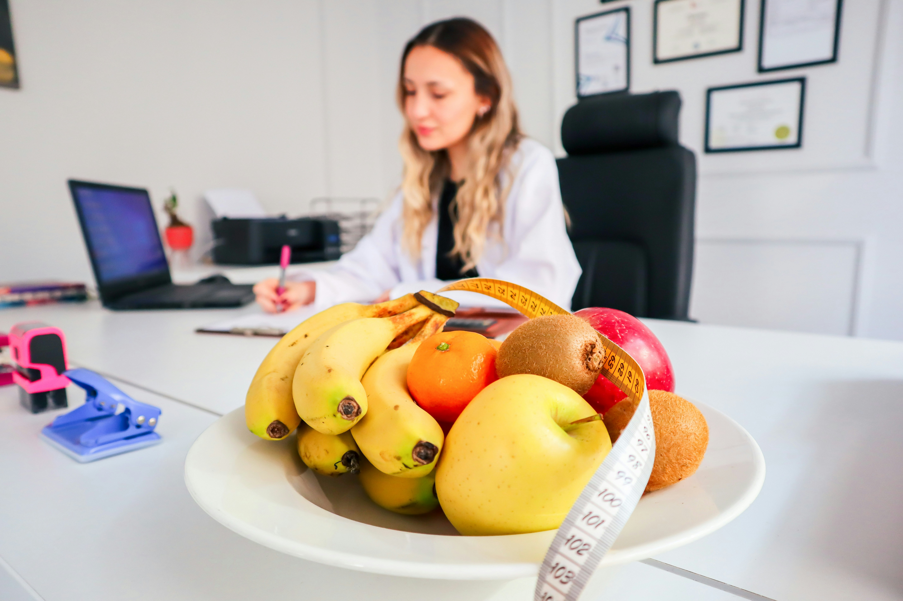
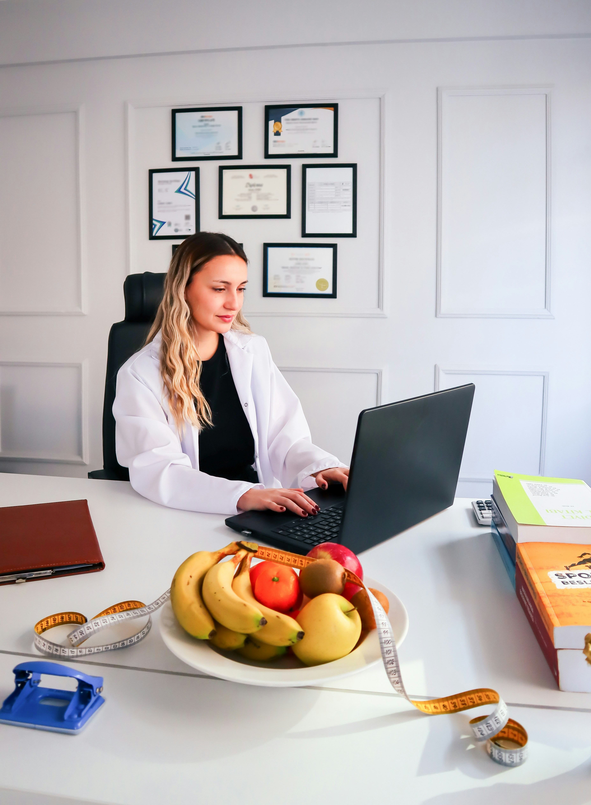

Evidencia
Decisiones nutricionales basadas en conocimiento científico y evidencia disponible.
Sabrina Agostini · Lic. en Nutrición
Mejorá tu composición corporal, rendimiento y alimentación con un enfoque científico, personalizado y sostenible.

Sobre mí
Soy Sabrina, Licenciada en Nutrición y Técnica en Alimentos. Además, cuento con capacitación en Nutrición Deportiva.
Trabajo desde la evidencia científica, pero también desde la realidad: tus horarios, preferencias, actividad física y hábitos forman parte del proceso.
Mi enfoque
Decisiones nutricionales basadas en conocimiento científico y evidencia disponible.
Un abordaje adaptado a tus objetivos, contexto, preferencias y necesidades.
El foco está en construir cambios sostenibles, no en soluciones imposibles de mantener.
Servicios
Primer encuentro para conocer tus objetivos y comenzar a construir un abordaje personalizado.
Espacio para revisar avances, ajustar estrategias y acompañar el proceso.
Evaluación de composición corporal. La herramienta más precisa para conocer en detalle de qué está compuesto tu peso: masa muscular, masa adiposa, masa ósea y residual.
Proceso guiado para ganar masa muscular, perder grasa y potenciar rendimiento en el gimnasio.
¿Para quién es?
Para quienes buscan acompañar entrenamiento y rendimiento desde la nutrición.
Para quienes quieren trabajar sobre composición corporal con objetivos realistas.
Para quienes quieren ordenar su alimentación y construir hábitos sostenibles.



Preguntas frecuentes
Sí. Las consultas online están disponibles para personas de todo Argentina.
En La Plata, en los consultorios Ondas de Choque y Cirec.
Sí. El abordaje puede adaptarse a objetivos relacionados con actividad física y rendimiento.
Podés reservar online desde el botón de turnos o escribir por WhatsApp si querés hacer una consulta antes.
Consultorios
Av. 13 Nº 493
La Plata, Buenos Aires
Calle 35 Nº 828
La Plata, Buenos Aires
También podés realizar tu consulta de manera online desde cualquier punto de Argentina.
Tu próximo paso
Contame qué querés lograr y encontremos una estrategia que puedas sostener.